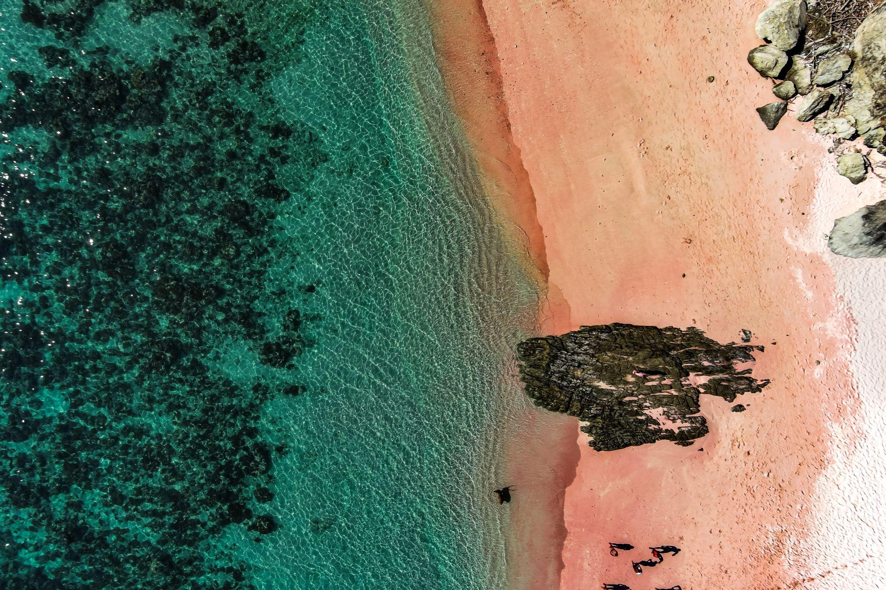

Dawn stroll on blush sands, snorkel vibrant reefs & hunt pink shells with Kapalsantai.
A Blush on the Horizon
Pantai Pink, just a 90-minute speedboat from Labuan Bajo, is one of only seven pink beaches worldwide—its blush hue comes from crushed red coral and foraminifera shells. In 1–2 m crystal-clear shallows, snorkel among clownfish, parrotfish, and baby turtles. There are no facilities, so pack water, snacks, and sun protection. Arrive at dawn for the sand’s rosy peak, then kayak or lounge on the soft pastel grains. Ready to paint your own adventure pink?
3 Rosy Revelations of Pantai Pink
- Coral & Shell Origins Tiny red-coral fragments and foraminifera shells crushed over centuries create the pink hue.
- Seasonal Peak Visit in the dry months (June - September) when lower tides reveal more rosy sand
- Turtle Nursery Nearby Seagrass beds offshore nurture baby green turtles, keep an eye out during your dip.
Why Pink Beach Belongs on Your Bucket List
- Global Rarity Only a handful of beaches share this rosy glow—Indonesia’s own natural marvel.
- Snorkeler’s Paradise Shallow reefs alive with vibrant corals and fish just a few strokes from shore.
- Photo-Ready Scenery Volcanic islets, turquoise sea, and a blush-pink shoreline—no filter needed.
3 Must-Do Experiences at Pink Beach
- Dawn Stroll on Rose-Tinted Sand Arrive by 06:00 to experience the sand at its pinkest. A lightweight sarong doubles as a comfy picnic blanket while the island wakes up.
- Snorkel the Color Parade Wade into waist-deep water off the east end. Look for clownfish in anemones, parrotfish grazing on coral, and the occasional green turtle drifting by
- Pink-Tinted Shell Hunt Trace the high-tide line just after sunrise: spot blush coral chips, tiny spiral shells, and rosy scallop shards—snap a photo, then leave them to keep the sand glowing for the next explorer.
Best Season to Visit
- June- September: Pantai Pink is at its brightest pink sands
What to Pack
- Quick-dry swimwear & rash guard
- Sunscreen & wide-brimmed hat
- Dry bag or waterproof phone case
- Water & light snacks
- Beach towel & change of clothes
Ready to Paint Your Feed Pink?
Pantai Pink proves a single day trip can become a lasting memory. Book your adventure, dive into those pastel waters, and let Labuan Bajo’s rosy gem work its magic.
Tag @Kapalsantai, share your blush-sand snapshot, and show the world you’ve walked on pink!
